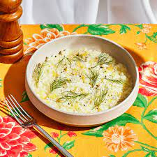

back
Fennel Risotto

Description
Don't let the strong taste of fennel scare you: it fades down after cooking.
This is a rich and creamy risotto, just like it ought to be! You can use chicken stock in place of the vegetable stock, as well as olive oil for the butter.
Ingredients
- 4 bulbs fennel
- 1 tablespoon butter
- 1 medium onion, chopped
- 2 cups uncooked Arborio rice
- 7 cups vegetable broth
- 6 tablespoons freshly grated Parmesan cheese
- 1 tablespoon dried parsley
- freshly ground black pepper to taste
Steps
- Cut the base off of the fennel bulbs, and cut a cone shape into the base to remove the core. Slice the fennel vertically (lengthwise) into 1/4 inch thick slices.
- Melt butter in a heavy-bottomed stock pot over medium heat. Cook onions and fennel in butter for 2 minutes. Stir in the rice; cook for another 2 minutes, stirring constantly, until lightly toasted. Stir in 1 cup vegetable broth; continue stirring until liquid is almost completely absorbed. Repeat this process with remaining broth, stirring constantly. Incorporating the broth should take 15 to 20 minutes in all.
- Stir in cream, 3 tablespoons Parmesan and parsley, and cook until rice is done and risotto is thick and creamy. Season to taste with black pepper. Divide risotto among 6 bowls, and sprinkle with remaining cheese.